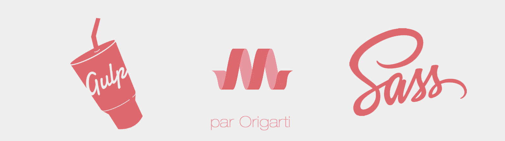

Bienvenue !

Ce projet est une base de travail créee par Gaëtan Ruiz.
Il a pour utilité de permettre de démarrer plus rapidemment un projet d'application web tout en automatisant un certain nombre de procédures destinées à améliorer grandement la productivité et la maintenabilité des sources de ce projet.
CSS
- Compilation du SASS en CSS
- Auto-préfixage du CSS
- Minification des sources CSS
- UnCSS : le fichier .css final n'utilise que les règles de style réellement employées par les fichiers HTML définis.
Javascript
- Concaténation de l'ensemble des fichiers Javascript en un seul.
- Minification des sources JS
Images
- Optimisation des images pour un affichage "Web"
Pour cela, il utilise les technologies suivantes :
En savoir plus